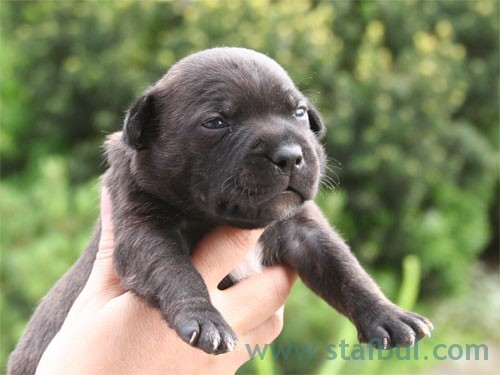
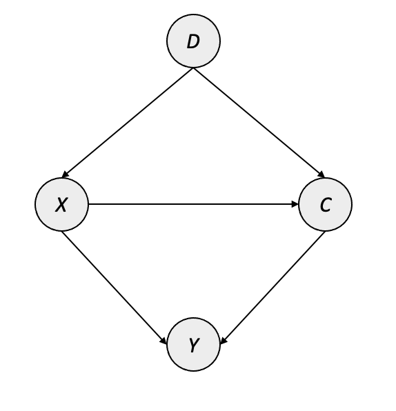
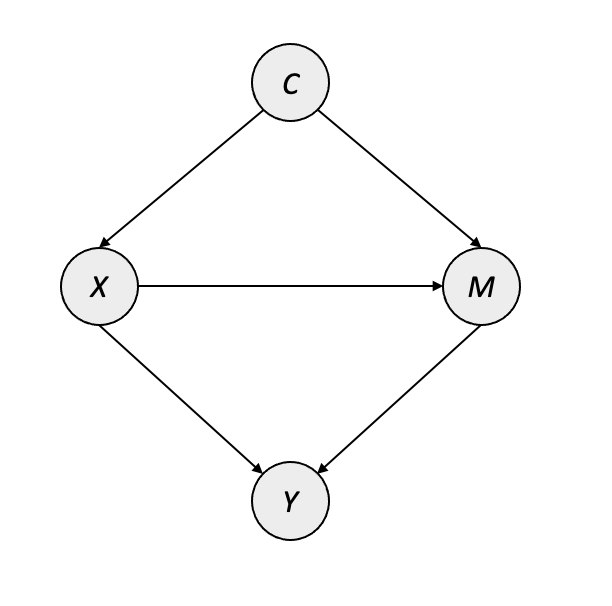
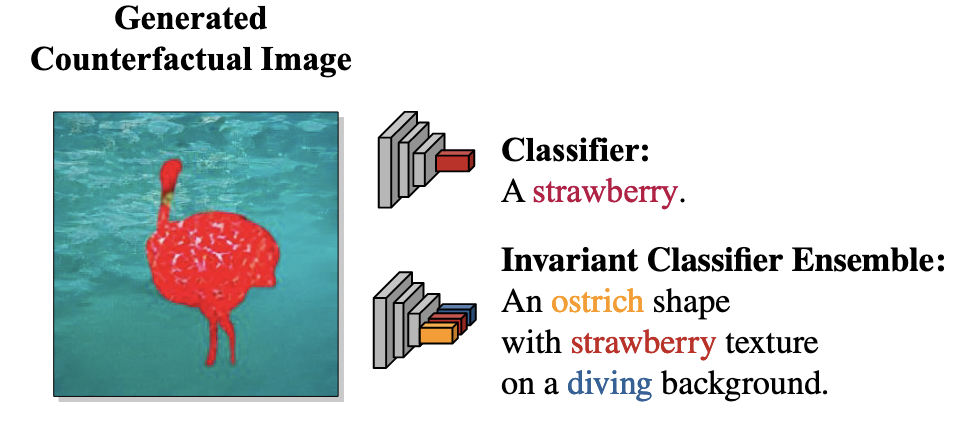
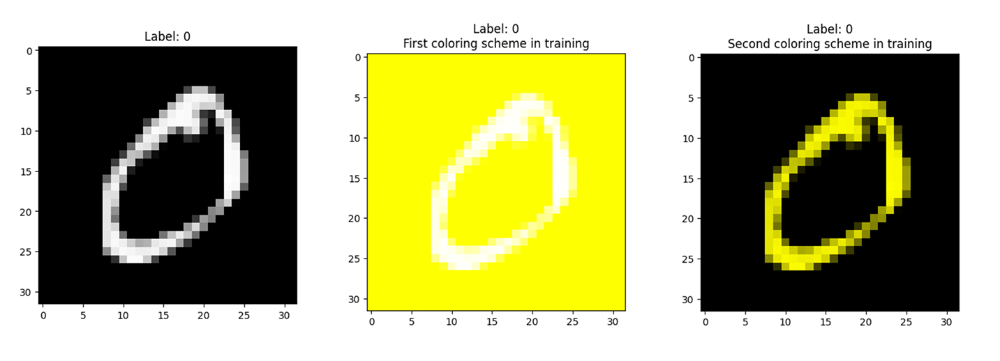
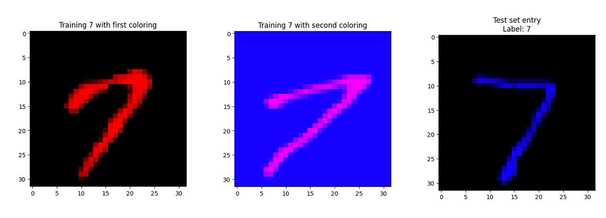
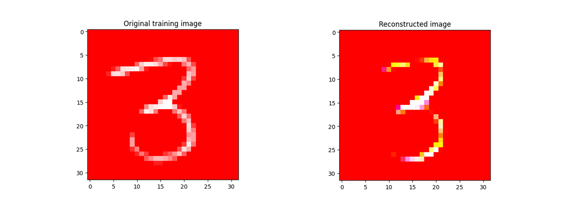
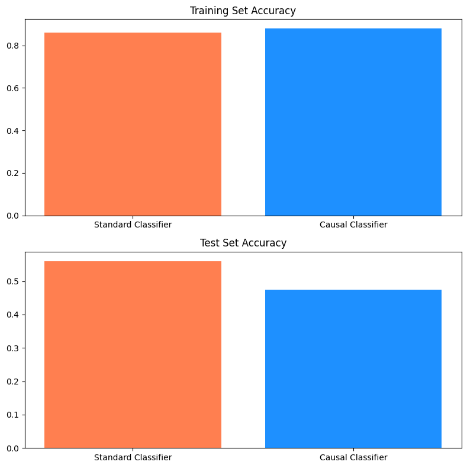

6 Computer Vision
This chapter focuses on applications combining causal inference and computer vision. Computer vision (CV) refers to a domain of machine learning which involves the use of images or videos as inputs. CV has gained significant adoption over the last several years, with applications appearing within industries including technology, medicine, manufacturing, and defense. In recent years, researchers have developed some exciting methods using causal inference techniques to overcome common problems within CV – in this chapter, we will give a brief overview of common tasks and methodologies in CV, and detail the various ways that causality is being used.
Prerequisite Knowledge
In addition to the causal inference concepts introduced in the first part of this book, relatively little background knowledge is necessary for this chapter. Readers with more familiarity or experience with computer vision will likely benefit more from this chapter, but we will introduce relevant concepts, tasks, challenges, and methods as needed.
Readers who wish to learn more about computer vision more holistically are encouraged to explore the following resources:
- The Fast AI book (Howard and Gugger 2020) has two chapters on computer vision1
- The Coursera course on Convolutional Neural Nets and Computer Vision from Andrew Ng’s Deep Learning specialization2
6.1 The Current State of Computer Vision
Computer vision has come a long way since Yann LeCun introduced the convolutional neural network (CNN) for handwritten digit recognition (Lecun et al. 1998). Starting in around 2012 – when AlexNet (Krizhevsky, Sutskever, and Hinton 2012) shattered existing state-of-the-art on the ImageNet task using a deep CNN – computer vision began to take off, with its trajectory aided by an increase in the availability of computing power coinciding with the “big data” boom. Since then, previously difficult benchmarks have become too easy to use, and boundaries continue to be pushed.
Today, computer vision comprises a wide variety of tasks, ranging from image classification and object detection to image generation and question answering based on input image. These models are used in applications such as medical image segmentation (Milletarì, Navab, and Ahmadi 2016), quality control in factories (Zhou, Zhang, and Konz 2021), and identification of pedestrians, structures, and other vehicles in self-driving cars (Cakir et al. 2022). Deep learning dominates modern CV, and model design depends largely upon the application; however, many commonalities exist: convolutional networks are still used in many settings, while sequence models such as Transformers have also gained popularity in many tasks due to their success in natural language processing.
There are a handful of common issues that occur within CV projects, and they are similar in nature to problems encountered more broadly throughout machine learning. These issues include a lack of robustness when transferring to slightly different datasets, which is often due to the tendency of greedy, data-hungry ML models to latch onto spurious correlations — for instance, random patterns in the background or textures in an image. The issue of spurious correlations is exacerbated by the fact that deep learning techniques are inherently uninterpretable. Techniques exist to “peek into the black box,” such as highlighting a salient region using gradient flow through a network; however, these models do not provide reliable methods of interpreting their output or decisions, making it difficult to truly understand how a model learns a particular pattern or identify when it happens.
6.2 Causal Methods in Computer Vision
As we have seen throughout this book thus far, handling spurious correlation is one of the major features of causal inference, making CV a compelling area of application for causal methods. In fact, a recent paper in the journal Nature describes the importance of causal reasoning within computer vision in clinical healthcare settings (Castro, Walker, and Glocker 2020). In this paper, the authors primarily focus on the necessity of understanding the causal direction of the data generating process, describing the biases which can appear when observations and annotations are sampled in ways that do not match the real-world setting in which the model will be deployed. These mismatches can be subtle, but the corresponding sampling bias can have a catastrophic impact on a deployed model’s performance. Their work shows that causal language can prevent issues like these from creeping into clinical computer vision projects. As we will see in this chapter, causal inference methods can aid CV practitioners in other ways as well: from improving model performance to making models more robust in out-of-domain settings.
In the sections that follow, we will give an overview of the current state of causal methods within various subdomains of computer vision, including object recognition and segmentation, few-shot learning, vision-language tasks, and improving robustness. After introducing these areas of application in causal computer vision, we will provide a case study detailing one of these methods.
6.2.1 Image Classification
Image classification, also called visual recognition, is one of the most common tasks in computer vision: given an input image, a model is trained to predict the class of the image from a set of defined classes (e.g. categorizing photos of clothing as shirts, pants, jackets, etc.). One longstanding image classification benchmark is ImageNet, a dataset of over 14 million images labeled in a hierarchical class structure made up of thousands of categories (Deng et al. 2009). An example of one of these images is given in Figure 6.1.
We can see that the image contains an adorable puppy – this image is given the label “Staffordshire bull terrier,” and it contains some examples of the issues that arise within CV. Imagine that we are training a classifier to distinguish Staffordshire bull terriers from another dog breed, for example a Boston terrier. Ideally, we would want this model to focus on the true signal made up by meaningful differences between these breeds: Boston terriers are often black and white, while Staffordshire terriers have more uniform coats; Staffordshire terriers have more pronounced muzzles, while Bostons have a short snout. However, in reality, a deep learning model will look for any correlations present in the data in order to minimize the loss on the training set.
An obvious issue in this image is the watermark in the bottom right corner of Figure 6.1, which is a URL for a breeder of Staffordshire bull terriers in the Czech Republic. If many of our training images for Staffies come from this breeder, the model will likely learn to look for the shape of that URL watermark instead of more nuanced features like differences in the shapes of ears or muzzles. A model trained to identify the URL of a dog breeder will be useless if we want to deploy it on natural images “in the wild.” This is a prime example of how CV models can learn undesirable patterns, just like the spurious correlations introduced earlier in this book. This type of problem is a central focus in the area of robustness, and two approaches for mitigating spurious correlation in image classification are detailed in Section 6.2.5.
The image in Figure 6.1 also includes potential confounders: for example, the puppy is photographed while being held by its owner. If our training set primarily includes images of this breed being held, the model might look for the shape of human hands rather than the dog’s fur length or color. Confounders like this one can appear in background color, lighting, textures, and other co-occurring elements within an image, and issues can arise when a classifier relies on the presence of a confounder rather than the primary subject of interest. One way to remedy this issue would be to manually label any confounders present in an image and intervene on their presence when training the model, but this would require significantly more effort than standard image classification labeling. One promising alternative, dubbed Causal Attention Module (CaaM), is a modification of the visual attention mechanism which allows for a model to attend to particular regions or channels of an image with greater focus. CaaM models confounders in an unsupervised manner, which allows for intervention without the need to manually annotate confounders during the labeling process. Their method works within standard visual attention settings, including vision Transformers (ViT) and attention CNNs, and achieves greater in-domain and out-of-domain performance than both attention-based and non-attention-based models (T. Wang et al. 2021).
6.2.2 Few-Shot Learning
Transfer learning has played a major role in the success of deep learning models in the last several years: we first pretrain on a task with abundant data, such as image reconstruction, and then fine-tune on the actual task we want the model to perform. Pretrained models allow for better transfer with less labeled data, accelerating the process of training a useful model whenever a relevant pretrained base model is available. Popular pretrained CV models include ResNet (He et al. 2015) and Vision Transformer (Dosovitskiy et al. 2020) for classification as well as the YOLO family of models for object detection (Redmon et al. 2015).
Few-shot learning is a special case of transfer learning, in which the target task has very few labeled observations available for fine-tuning Few-shot learning (FSL) has become a common tool for testing the performance of pretrained models, since it assesses the base model’s ability to generalize to new domains and tasks with little information. The successes of deep learning models in the few-shot setting is an exciting development, because it represents a major shift in what was previously impossible: that a deep neural network can reach meaningful performance with only a handful of relevant observations for a given task. The magic of FSL comes from the pretraining/fine-tuning paradigm – the model is able to extend the patterns it learns in the less relevant yet data-rich setting (such as low-level shapes and textures) beyond the immediate context and into an actually meaningful task.
However, is it possible that the “knowledge” gained in the pretraining setting is also potentially harmful in the few-shot fine-tuning setting? This is a phenomenon known as negative transfer, where the biases in the pretrained dataset actually degrade performance on the downstream task. When we examine this phenomenon from a causal perspective, it becomes clear why this might happen. A recent paper at NeurIPS (Yue et al. 2020) frames the few-shot transfer setting within the context of the causal graph in Figure 6.2, where \(D\) represents the pretrained knowledge of the base model, \(X\) denotes the feature representation produced initially by \(D\), \(C\) denotes the transformed representation of \(X\) in the low-rank manifold, and \(Y\) represents the output of the task-specific final layer.

In plain terms, this causal graph is saying that the biases present in the pretrained model are actually a confounding presence on the performance in the FSL task. For example, consider the possibility that a pretrained model had only seen Staffordshire terriers like the one in Figure 6.1 indoors, standing on rugs – such a pretrained model might misinterpret the correlation between the dogs and their surroundings as something meaningful, and we may not have enough example images in the FSL context to overrule that bias.
As a way of addressing this, the authors suggest an interventional approach to remove the impact of the confounders. Specifically, if the standard (i.e. many-shot) setting for model transfer produces a task-specific layer \(Y\) which is more or less fully adapted to the task, we can think of this action as \(P(Y|X) \approx P\big(Y|{do}(X)\big)\). This is not the case in the few-shot setting due to the substantial influence of \(D\) on \(Y\), however, this can be addressed by intervening on \(D \rightarrow X\) via a backdoor adjustment and effectively modeling \(P\big(Y|{do}(X)\big)\) directly. The authors do this via two specific adjustments: a feature-wise adjustment using the output of the final pretrained layer, and a class-wise adjustment to account for pretraining tasks which are classification-based (e.g. 1000-class ImageNet, or BERT’s masked language modeling).
The result of the interventional few-shot learning (IFSL) approach is a method that improves FSL performance on different types of tasks and in different CV architectures. The authors show that the benefit of IFSL is greater in 1-shot tasks than in 5-shot tasks, and that improvements are more significant when the FSL domain is more different from the pretraining domain. The authors also demonstrate that existing methods of boosting FSL performance – such as data augmentation – are approximations of a similar intervention.
6.2.3 Weakly Supervised Semantic Segmentation
Semantic segmentation is a computer vision task which involves the generation of a pixel-level mask corresponding to individual entities within an image, which produces groups of regions corresponding to semantically similar objects. For example, a segmentation model trained on medical images may learn to distinguish suspicious masses from fluid, bone, and other normal-appearing tissue also visualized within the scan; and a segmentation model in an autonomous driving setting may try to identify masks of pedestrians, other vehicles, and road signs within the images produced by the vehicle’s camera. Semantic segmentation provides richer context through labeling classes for the masks within an image, such as denoting each distinct “person” mask within an image as belonging to the same “person” class. A semantic segmentation model may identify masked regions for both “dog” and “person” in our example image in Figure 6.1, while keeping their masks separate from each other as well as the nondescript background of the image.
One challenge with semantic segmentation is the cost of labeling: relative to the effort required to label other CV tasks (e.g. image classification), labeling images for semantic segmentation is difficult and time-consuming due to the nature of masking pixels for every instance of a particular entity. Weakly supervised semantic segmentation (WSSS) seeks to lower this barrier by collecting image-level labels, training a classifier, and utilizing information from the classifier to generate “pseudo masks” for semantic segmentation corresponding to the labels in the classification task (Ahn and Kwak 2018). The “weak supervision” aspect comes through using one model’s output as the ground-truth input for another training task – it may not be a perfect or unbiased approach, but it significantly reduces the effort required to label and train semantic segmentation models, which in turn allows for labeled data to be collected at a much greater rate.
(Zhang et al. 2020) propose a causal approach to WSSS, based on a backdoor adjustment to mitigate the impact of spurious correlations introduced by class co-occurrence and incomplete image-level labeling. Their fundamental WSSS approach is similar to other typical WSSS pipelines, comprising of an image classifier which generates attribution masks for training the segmentation model. However, the authors propose a method called Context Adjustment (CONTA) which models an intervention on class co-occurrence. Their causal graph is provided in Figure 6.3, where \(X\) represents the image observation, \(Y\) represents the multi-label classification labels, \(C\) represents the “context prior” inherent within the data-generating process, and \(M\) is the image-specific manifestation of \(C\) for image \(X\).

It is worth noting that the context prior \(C\) does not directly influence the class labels in \(Y\), but instead only through observation-specific pathways through \(X\) and \(M\). The objective of CONTA is to train the initial image classifier to learn \(P\big(Y|{do}(X)\big)\) instead of the typical \(P(Y|X)\) used in training machine learning models. In order to model \(P\big(Y|{do}(X)\big)\), the authors propose a framework which uses class-wise average pseudo masks to provide the intervention while training the image classifier. This results in an iterative algorithm similar in nature to expectation-maximization (EM) algorithms:
- Train the multilabel image classifier using a custom loss function incorporating similarity against class-averaged masks
- Generate pseudo-masks using the trained classifier’s attribution map
- Train the segmentation model on pseudo-masks
- Update the class averaged masks using the output of the segmentation model
After a few iterations, this process results in a segmentation model which can produce cleaner boundaries between entities and more reliably handle complex images. A major benefit of this framework is that it is agnostic to the architecture and post-processing applied to the segmentation task, so that the latest art in segmentation can be used while also leveraging the causal techniques. The code for this framework is available at https://github.com/dongzhang89/CONTA.
Additional work in WSSS
A recent paper at CVPR proposes a WSSS technique for medical image segmentation based on similar foundations as CONTA – also using the WSSS approach of pseudo-masking via a classifier’s saliency maps. (Chen et al. 2022) extends the idea of intervening on influences from the data generating process by introducing an additional map for on anatomical structures present within the scan. The authors show that their method outperforms prior WSSS state of the art on various medical image segmentation tasks.
6.2.4 Vision-Language Tasks
The intersection of vision and language is gaining popularity as more breakthroughs are published, such as DALL-E’s results on image generation from a text prompt (Ramesh et al. 2021). Common tasks in this area include generating captions for images, answering questions about images, and performing reasoning about an image. Common techniques include visual attention, with larger Transformer-based architectures like BEiT (W. Wang et al. 2022) achieving recent success across many vision-language tasks. This section will provide an overview of three applications of causal inference designed to improve performance and reliability of vision-language models.
Visual Commonsense R-CNN
(T. Wang et al. 2020) introduces Visual Commonsense R-CNN (VC R-CNN), which combines the commonly used region-based CNN (R-CNN) with a “visual commonsense” module designed to learn more robust features for question-answering and captioning. VC R-CNN approaches this in an unsupervised manner by identifying confounders present in an image, which it controls via the backdoor adjustment. VC R-CNN begins by generating regions of interest from an existing pretrained model (such as Faster R-CNN), averaging the regions of interest for each possible category in the dataset, and using the resulting dictionary of average shapes as a feature in the model. Specifically, the “dictionary” of regions of interest for each class is used alongside the observation image as inputs to scaled dot-product attention. The authors show a performance boost within vision-language tasks but note that the improvement is smaller on VQA than in captioning and reasoning. Their code is available at https://github.com/Wangt-CN/VC-R-CNN.
Causal Attention
Attention is commonly used in vision-language tasks, as it creates stronger relationships within an image as well as between the image and text. However, as with other techniques in deep neural networks, attention is prone to exploiting spurious correlations learned during the training process which may not hold in the deployed setting. The authors of (Yang et al. 2021) propose a general causal attention (CATT) module intended to remove the impact of confounders. CATT is designed similarly to the attention mechanism used in vision Transformers; however, it is used to intervene by using a front-door adjustment, reducing the effect of confounders without needing explicit information about them (unlike VC R-CNN).
CATT does this by introducing additional sampling from other observations (dubbed cross-sample sampling, or CS-Sampling), which stratifies the input values in order to produce a deconfounded predictor. The authors provide the following illustration for this technique:
Intuitively, CS-Sampling approximates the “physical intervention” which can break the spurious correlation caused by the hidden confounder. For example, the annotation “man-with-snowboard” is dominant in captioning dataset [19] and thus the predictor may learn the spurious correlation between the snowboard region with the word “man” without looking at the person region to reason what actually the gender is. CS-Sampling alleviates such spurious correlation by combining the person region with the other objects from other samples, e.g., bike, mirror, or brush, and inputting the combinations to the predictor. Then the predictor will not always see “man-with-snowboard” but see “man” with the other distinctive objects and thus it will be forced to infer the word “man” from the person region.
This example shows the intuition behind the front-door adjustment happening in CATT along with its purpose of producing a deconfounded predictor. CATT achieves this by projecting the regions of interest for the training set as embeddings; the in-sample sampling (IS-Sampling) focuses only on the input image, while CS-Sampling uses other related images from the training set as the keys and values in the attention operation. Their method extends to both self-attention (regions of the image attending to each other) and top-down attention (the image attending to the embedded text), and it can be stacked in deep networks such as Transformers. The authors show an improvement over standard VQA methods as well as the ability to improve smaller architectures by adding CATT. Their code is available at https://github.com/yangxuntu/lxmertcatt.
Counterfactual Visual Question Answering
The final causal method for vision-language we will discuss is rather different from CATT and VC R-CNN. One aspect of visual question-answering which is not covered in the previously discussed methods is the risk of language bias affecting the performance of the VQA model. Language bias can occur in many ways, including the nature of the questions in the dataset. The authors of (Niu et al. 2021) focus largely on this source of bias, pointing out for example that 90% of the “do you see a…” questions in the VQA v1.0 dataset are correctly answered as “yes,” which incentivizes the model to focus on the type of question rather than the contents of the image. The authors propose a counterfactual approach to understanding and removing language bias in VQA, effectively allowing the model to imagine what would have happened, for example, if the question had arrived with no visual evidence.
Specifically, (Niu et al. 2021) frames the causal question of language bias in terms of commonly used counterfactual quantities capturing both direct and indirect effects. This approach seeks to disentangle the impact of three factors on the answer \(A\) produced in the VQA setting:
- The input image in isolation, \(V\)
- The input question in isolation, \(Q\): the pathway of language bias
- The model’s ability to perform multimodal reasoning, \(K\): the primary objective of VQA
Readers familiar with NLP or attention mechanisms will notice that the variable names \(Q\), \(K\), and \(V\) also correspond to the query, key, and value components of the attention function. This is by design, as it is helpful to delineate the flow of information through the VQA process. In this case, the direct effect of \(Q\rightarrow A\) is the undesirable effect: we do not want the answer to be determined in any large part by the question in isolation – instead, we want the model to understand the question and assess the input image to determine the appropriate answer. The authors approach this by quantifying the direct and indirect effects of \(Q\) on \(A\) and selecting the generated answer which produced the largest total indirect effect, an effective alternative for sampling based on the largest posterior probability.
6.2.5 Robustness and Transfer
The prior sections have discussed methods leveraging causal techniques to improve model performance within certain subdomains of CV. In this section, we will take a broader look at efforts focused within model robustness and transferability.
Despite the various directions of success in CV, most of the existing work on robustness in CV has been focused on applications in image classification. As a result, most of the research in causal-based robustness also applies to image classification. In this section, we will detail two such approaches: one for removing the impact of spurious correlation on features like texture and background, and another for evaluating model generalization via causal methods. As the world of computer vision continues to evolve, so too will efforts in robustness.
Counterfactual Data Augmentation for Robust Image Classifiers
The issue of complex, greedy ML models latching onto spurious correlations is not unique to computer vision, but it is a common problem facing CV practitioners. (Sauer and Geiger 2021) introduces Counterfactual Generative Networks, a GAN-based approach of creating counterfactual images that disentangle and separately model an image’s shape, texture, and background. The supervision for this model is only supplied by the image’s class label and the inductive biases from the orchestration of the GANs which leverage pretrained models, and the result is a series of models which can generate an image with specified shape, texture, and background. Figure 6.4 shows somewhat of an extreme example: the generated image from the authors’ prompt of an “ostrich” shape with “strawberry” texture on a “diving” background.

Using the generative models, the authors generate synthetic training data for the image classifier, such MNIST digits with slightly different colors or shapes, or animals with different backgrounds. The authors show that this additional information helps the model generalize better based on test set performance, providing an interesting direction for future work in causal robustness and counterfactual modeling.
Causal Inference for Model Generalization
Another important focus of robustness is centered around model transferability. This consists of two primary goals:
- Ensuring that a trained model transfers well to new data
- Understanding when and how things go wrong in the event that the model fails to transfer
In the context of computer vision, models can often generalize properly on new data drawn from the same distribution as the training set. However, performance often degrades substantially when attempting to generalize on data from another distribution. Using our earlier example, a model trained to identify Staffordshire bull terriers like the one in Figure 6.1 could perform well on images of puppies being held by their breeders, but might not generalize to adult dogs photographed in slightly different settings.
One way to view the issue of model transfer is through the lens of transportability. Transportability is a causal term used to describe whether information learned in one environment is applicable in another environment (Pearl and Bareinboim 2011). A lack of transportability in image classification means that there is some material difference in the relationship between images and their labels when comparing the in-distribution and out-of-distribution settings. (Mao et al. 2022) demonstrate this by first developing a causal graph to represent the out-of-distribution transfer process, which they use to show that the primary source of generalization failure is due to a lack of transportability in the association between images and labels.
In probabilistic terms, this issue of transportability means that the conditional probability \(P(Y|X)\) learned by the model in the in-distribution context does not match what is encountered out-of-distribution. After establishing that there is an issue of transportability, the authors decompose \(P(Y|X)\) into two components for each setting:
- The causal effect: an invariant quantity which is consistent in both the in-domain and out-of-domain setting (for example, the shape of a dog’s muzzle, or the color and length of its fur)
- The spurious effect: the part of the distribution which is inconsistent between contexts, leading to generalization failure (for example, different backgrounds or lighting)
The authors proceed to show that it is possible to estimate this invariant causal effect – that is, \(P\big(Y|{do}(X)\big)\) – for the image classification task without observing additional variables. This is made possible by adding a causal structure to the representations learned by deep neural networks, which is built upon the following assumptions:
- That the data generating process does indeed follow the decomposition outlined above (i.e. the images are made up of causal and spurious features)
- That a neural model can sufficiently learn representations which contain relevant the causal factors
- That the classifier will mimic the behavior of the true labeler when combining the causal factors from an in-distribution image \(x\) with the spurious factors of an out-of-distribution image \(x'\)
For settings where these assumptions hold, the authors present a framework to be used during training and estimation which can identify the causal transportability effect without needing additional information. During training, the framework leverages either a variational autoencoder (VAE) or another pretrained encoder to produce representations for the training images. The classifier then learns to categorize images based on the combination of representations of an image with other inputs from related training images. By doing this within-class sampling, the classifier learns more robust features about the image’s subject, allowing for more robust transfer. A similar sampling process is used to estimate \(P\big(Y|{do}(X)\big)\) during evaluation to assess the transportability of the image classifier and produce more robust predictions.
The work introduced in (Mao et al. 2022) provides a promising direction for reducing the impact of spurious correlation in image classification, and their results on adversarial domain generalization tasks show that the framework provides a meaningful boost in generalization. We will now provide a case study demonstrating the process on one of these tasks.
6.3 Case Study
This case study can be accessed via Google Colab, with a walk-through here as well.
The case study for this chapter includes a simple reimplementation of (Mao et al. 2022). The case study illustrates their transportable classification method on Colored MNIST (Arjovsky et al. 2020), a benchmark for evaluating classifier robustness using adversarial color shifts between training and test data.
The Colored MNIST dataset starts with the standard grayscale handwritten digits in the MNIST data, and it applies background coloring differently according to the dataset: training images have coloring applied according to their classes, and test images are colored randomly. The two transformations applied to the training set are shown in Figure 6.5

We can see that one variation has the digit in white on a yellow background, while the other has the digit in yellow on a black background. These are the same image, and both variations are present in the training set. Another example of this coloring scheme can be seen in Figure 6.6, where there are two training examples labeled as the digit 7, each representing a different coloring for sevens. Also present in Figure 6.6 is a test image with the label of 7, and we can see that its coloring matches neither of the training sevens.

The causal transportability methods rely on the use of an image encoder; we follow the original implementation and use a variational autoencoder. However, there is nothing special about the autoencoder, and other image encoders (e.g. a ResNet) can be used. Figure 6.7 shows an image from the Colored MNIST training set along with its reconstructed representation produced by the VAE.

The autoencoder is used to encode the input images. The causal classifier then uses fragments of similar training images with the same label to force the model to learn the relevant features from the input batch. Unfortunately, this does not seem to outperform a non-causal benchmark in our experiment: our non-causal model uses an architecture which is similar to the one used by the causal classifier. Figure 6.8 shows the training and test set performance of each of these classifiers on the Colored MNIST dataset.

As we can see, the causal classifier has worse performance on the test set than the non-causal benchmark. This gap in performance could be due to a number of reasons, including the difference in baseline used in the original implementation, the modifications applied to the original Colored MNIST dataset, or the design of the encoder. For example, perhaps a CNN- or attention-based encoder would perform better.
Despite these classification results, causality in computer vision is still an exciting area of ongoing work, presenting challenges and opportunities which could lead to meaningful gains in robustness in applied CV. Importantly, as we can see in the case study code, causal methods in computer vision can be implemented in ways that look largely similar to other standard deep learning code – for instance, the model classes and training loop for the causal classifier looks very similar to the PyTorch code used to train the non-causal classifier. Making such methods accessible for use in other applications will foster additional experimentation with these methods.
6.4 Conclusions
In this chapter, we have introduced the reasons why practitioners in computer vision would want to use causality in their work. Causal methods have produced promising initial results across several areas of computer vision, with much work focusing on image classification and vision-language tasks.
We also demonstrated one of these methods in a case study. This case study introduces the Colored MNIST dataset and compares a causal transportability approach against a standard image classifier. While the causal method does not provide a performance boost over the non-causal method, it provides a data point and streamlined PyTorch implementation for future experimentation.
Ahn, Jiwoon, and Suha Kwak. 2018. “Learning Pixel-Level Semantic Affinity with Image-Level Supervision for Weakly Supervised Semantic Segmentation.” https://arxiv.org/abs/1803.10464.
Arjovsky, Martin, Léon Bottou, Ishaan Gulrajani, and David Lopez-Paz. 2020. “Invariant Risk Minimization.” https://arxiv.org/abs/1907.02893.
Cakir, Senay, Marcel Gauß, Kai Häppeler, Yassine Ounajjar, Fabian Heinle, and Reiner Marchthaler. 2022. “Semantic Segmentation for Autonomous Driving: Model Evaluation, Dataset Generation, Perspective Comparison, and Real-Time Capability.” arXiv. https://doi.org/10.48550/ARXIV.2207.12939.
Castro, Daniel C., Ian Walker, and Ben Glocker. 2020. “Causality Matters in Medical Imaging.” Nature Communications 11 (1). https://doi.org/10.1038/s41467-020-17478-w.
Chen, Zhang, Zhiqiang Tian, Jihua Zhu, Ce Li, and Shaoyi Du. 2022. “C-CAM: Causal CAM for Weakly Supervised Semantic Segmentation on Medical Image.” In Proceedings of the IEEE/CVF Conference on Computer Vision and Pattern Recognition (CVPR), 11676–85.
Deng, Jia, Wei Dong, Richard Socher, Li-Jia Li, Kai Li, and Li Fei-Fei. 2009. “ImageNet: A Large-Scale Hierarchical Image Database.” In 2009 IEEE Conference on Computer Vision and Pattern Recognition, 248–55. https://doi.org/10.1109/CVPR.2009.5206848.
Dosovitskiy, Alexey, Lucas Beyer, Alexander Kolesnikov, Dirk Weissenborn, Xiaohua Zhai, Thomas Unterthiner, Mostafa Dehghani, et al. 2020. “An Image Is Worth 16x16 Words: Transformers for Image Recognition at Scale.” arXiv. https://doi.org/10.48550/ARXIV.2010.11929.
He, Kaiming, Xiangyu Zhang, Shaoqing Ren, and Jian Sun. 2015. “Deep Residual Learning for Image Recognition.” arXiv. https://doi.org/10.48550/ARXIV.1512.03385.
Howard, J., and S. Gugger. 2020. Deep Learning for Coders with Fastai and Pytorch: AI Applications Without a PhD. O’Reilly Media, Incorporated. https://books.google.no/books?id=xd6LxgEACAAJ.
Krizhevsky, Alex, Ilya Sutskever, and Geoffrey E Hinton. 2012. “ImageNet Classification with Deep Convolutional Neural Networks.” In Advances in Neural Information Processing Systems, edited by F. Pereira, C. J. Burges, L. Bottou, and K. Q. Weinberger. Vol. 25. Curran Associates, Inc. https://proceedings.neurips.cc/paper/2012/file/c399862d3b9d6b76c8436e924a68c45b-Paper.pdf.
Lecun, Y., L. Bottou, Y. Bengio, and P. Haffner. 1998. “Gradient-Based Learning Applied to Document Recognition.” Proceedings of the IEEE 86 (11): 2278–2324. https://doi.org/10.1109/5.726791.
Mao, Chengzhi, Kevin Xia, James Wang, Hao Wang, Junfeng Yang, Elias Bareinboim, and Carl Vondrick. 2022. “Causal Transportability for Visual Recognition.” https://arxiv.org/abs/2204.12363.
Milletarì, Fausto, Nassir Navab, and Seyed-Ahmad Ahmadi. 2016. “V-Net: Fully Convolutional Neural Networks for Volumetric Medical Image Segmentation.” 2016 Fourth International Conference on 3D Vision (3DV), 565–71.
Niu, Yulei, Kaihua Tang, Hanwang Zhang, Zhiwu Lu, Xian-Sheng Hua, and Ji-Rong Wen. 2021. “Counterfactual VQA: A Cause-Effect Look at Language Bias.” https://arxiv.org/abs/2006.04315.
Pearl, Judea, and Elias Bareinboim. 2011. “Transportability of Causal and Statistical Relations: A Formal Approach.” In 2011 IEEE 11th International Conference on Data Mining Workshops, 540–47. https://doi.org/10.1109/ICDMW.2011.169.
Ramesh, Aditya, Mikhail Pavlov, Gabriel Goh, Scott Gray, Chelsea Voss, Alec Radford, Mark Chen, and Ilya Sutskever. 2021. “Zero-Shot Text-to-Image Generation.” https://arxiv.org/abs/2102.12092.
Redmon, Joseph, Santosh Divvala, Ross Girshick, and Ali Farhadi. 2015. “You Only Look Once: Unified, Real-Time Object Detection.” arXiv. https://doi.org/10.48550/ARXIV.1506.02640.
Sauer, Axel, and Andreas Geiger. 2021. “Counterfactual Generative Networks.” https://arxiv.org/abs/2101.06046.
Wang, Tan, Jianqiang Huang, Hanwang Zhang, and Qianru Sun. 2020. “Visual Commonsense r-CNN.” In Proceedings of the IEEE/CVF Conference on Computer Vision and Pattern Recognition (CVPR).
Wang, Tan, Chang Zhou, Qianru Sun, and Hanwang Zhang. 2021. “Causal Attention for Unbiased Visual Recognition.” arXiv. https://doi.org/10.48550/ARXIV.2108.08782.
Wang, Wenhui, Hangbo Bao, Li Dong, Johan Bjorck, Zhiliang Peng, Qiang Liu, Kriti Aggarwal, et al. 2022. “Image as a Foreign Language: BEiT Pretraining for All Vision and Vision-Language Tasks.” https://arxiv.org/abs/2208.10442.
Yang, Xu, Hanwang Zhang, Guojun Qi, and Jianfei Cai. 2021. “Causal Attention for Vision-Language Tasks.” In Proceedings of the IEEE/CVF Conference on Computer Vision and Pattern Recognition (CVPR), 9847–57.
Yue, Zhongqi, Hanwang Zhang, Qianru Sun, and Xian-Sheng Hua. 2020. “Interventional Few-Shot Learning.” In Advances in Neural Information Processing Systems, edited by H. Larochelle, M. Ranzato, R. Hadsell, M. F. Balcan, and H. Lin, 33:2734–46. Curran Associates, Inc. https://proceedings.neurips.cc/paper/2020/file/1cc8a8ea51cd0adddf5dab504a285915-Paper.pdf.
Zhang, Dong, Hanwang Zhang, Jinhui Tang, Xian-Sheng Hua, and Qianru Sun. 2020. “Causal Intervention for Weakly-Supervised Semantic Segmentation.” In Advances in Neural Information Processing Systems, edited by H. Larochelle, M. Ranzato, R. Hadsell, M. F. Balcan, and H. Lin, 33:655–66. Curran Associates, Inc. https://proceedings.neurips.cc/paper/2020/file/07211688a0869d995947a8fb11b215d6-Paper.pdf.
Zhou, Longfei, Lin Zhang, and N. Konz. 2021. “Computer Vision Techniques in Manufacturing.” IEEE Transactions on Systems, Man, and Cybernetics: Systems 53: 105–17.